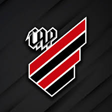

O Club Athletico Paranaense foi fundado em 26 de março de 1924, na cidade de Curitiba, fruto da fusão entre América e Internacional. Desde então, o clube construiu uma história marcada por inovação, títulos e paixão da torcida rubro-negra.
Conhecido como Furacão, o Athletico destacou-se nos campeonatos estaduais ao longo do século XX, mas foi no século XXI que se consolidou como uma potência nacional, conquistando títulos importantes e projetando-se internacionalmente.
A partir dos anos 2000, com a conquista do Campeonato Brasileiro em 2001, o clube passou a disputar competições de alto nível. Investiu em estrutura, revelou talentos e, com a Arena da Baixada modernizada, foi sede da Copa do Mundo de 2014. Entre os feitos mais notáveis estão as conquistas da Copa Sul-Americana (2018 e 2021) e da Copa do Brasil (2019), além de participações consistentes na Libertadores.
Destaques da trajetória recente:
Assim como a carreira de um artista, o Athletico também passou por diversas "eras" em sua história. Desde os anos iniciais no futebol paranaense, passando pela era de títulos nacionais e internacionais, até os dias atuais, com uma gestão moderna, o clube mostra evolução constante. Cada fase representou não apenas crescimento esportivo, mas amadurecimento institucional e identificação com sua torcida.
